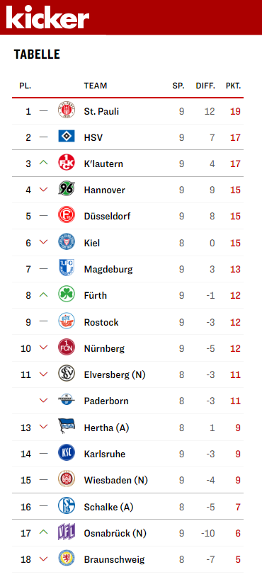

SVWW vs. HSV @ 2023-10-07
Two hearts beat in my chest
 1:1
1:1

Since my youth I am a (small) fan of the Hamburger Sportverein (HSV). Magath, Hrubesch, Keegan were my sporting heroes back then. This was certainly also related to the fact that the club was one of the best in Europe in the early 80s. Two championships, European Cup victory and a strong team left an impression on me. As the last founding member of the 1. Bundesliga, however, it was always in danger of relegation in the last 10 years and then really relegated to the 2. Bundesliga in 2018 after 55 years. What followed were sad attempts to climb back up. Always so close that the saying prevailed: “How can you tell that it’s springtime in Germany? The trees are sprouting and HSV is fucking up the promotion!”
In my first post in this series, I described how my hometown club from Wiesbaden made it into the 2. Bundeliga and this particular home game this weekend has a special appeal for me, of course. The favorite club from my youth against the one from my present. My Wehen Wiesbaden against my HSV.
Unfortunately I missed the game two weeks ago against Elversberg, because I had already made a promise to go to Mannheim to the Bundesgartenschau, but maybe it was a good thing, because my team was in a bad mood and lost 0:2. Just like the last away game against Hannover (2:0) and the cup game against RB Leipzig at home in between (2:3), where I actually wanted to go, but due to a small error in understanding did not get into the stadium. So it was time to go back to the arena, because with me SVWW always had something to cheer about, even if it was just a draw that felt like a win.
I also have a few HSV fans in my circle of friends and so I made use of my right of first refusal of 4 more tickets for this game. I sat on my permanent seat in the front row and my friends at a few rows behind me. The elderly lady on my left was not present this time, but a nice man who had taken her place was. The silent one on my right did not come at all and his seat thus remained empty.
The Game
HSV is actually in shape this year to make it back to the Bundesliga. They have already dropped a few points, but have been on the promotion places from the beginning. This year it should be something and accordingly dominant have the Hamburg the game against once again deep standing Wiesbadener also started. Very sure of the ball and winning almost every duel, they were unable to capitalize on this in the first half. They brought the ball very close to the goal, but not into it, and you could tell that the guests were getting a little more annoyed as time went on.
This was expressed shortly before the half-time break also in a few unsportsmanlike conduct. Dropping and claiming foul play is simply stupid and only provokes catcalls. The one or other time is overall bad referee but also fell for the trick or has made other nonsensical decisions, which caused the “right” fans around me to nastiest insults.


After the break, the game continued just as it had stopped a quarter of an hour earlier: HSV played beautifully, safely but ineffectively. They even scored a goal, but it was disallowed for offside. The SVWW was defending with all men in their own half, sometimes desperately, and only rarely managed to counterattack.
9 minutes before the end, the Wiesbadener were then once in front of the opposing goal and from a rather harmless header and a weak defense of the goalkeeper became a goal! 1:0! Unbelievable!
The remaining 9 minutes plus 6 minutes of injury time can be called spectacular: HSV ran frantically and tried everything to put the f***ing ball in the goal and in the 87th minute the ball was actually in our net … 1:1! But that was not enough for the guests. They kept increasing the pressure to win this game. Partly too hectic and headless, but we had real trouble to fend them off. However, one of these defensive actions in the penalty area led to a penalty kick for HSV in the 97th minute. Damn! No! … but the penalty taker slammed the thing against the crossbar! YESSS!
Conclusion
Another one of those draws that feels like a win. It’s a pity that it wasn’t enough for a win, but you have to admit that HSV was really a class above. They’re really playing for promotion and we’re playing to stay in the league. What gives me courage is that the Wiesbaden team fights so passionately and never gives up. Every opponent has a very hard time with this defense and that’s a good approach to still play in the 2nd Bundesliga next year.
You can interact with this article (applause, criticism, whatever) by mention it in one of your posts or by replying to its syndication on Mastodon or Pixelfed, which will also be shown here as a Webmention ... or you leave a good old comment with your GitHub account.
Webmentions
No Webmentions yet...
In case your blog software can't send Webmentions, you can use this form to submit me a mention of this article...
Related


 There are many Mastodon instances out there.
Tell me yours and I will redirect you to the share dialog of your server:
There are many Mastodon instances out there.
Tell me yours and I will redirect you to the share dialog of your server:
Comments